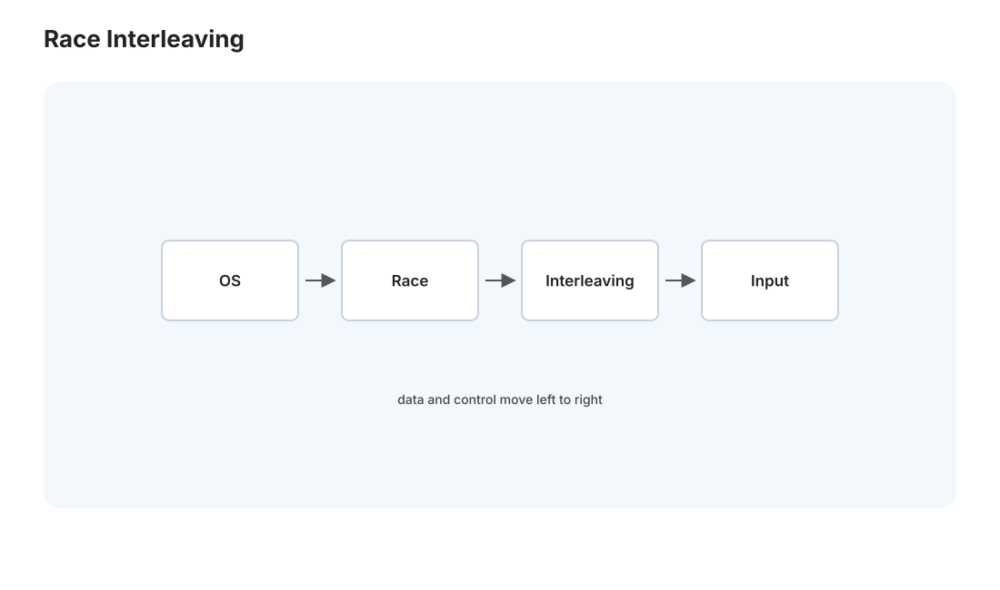
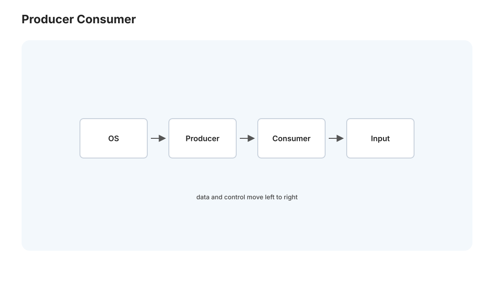
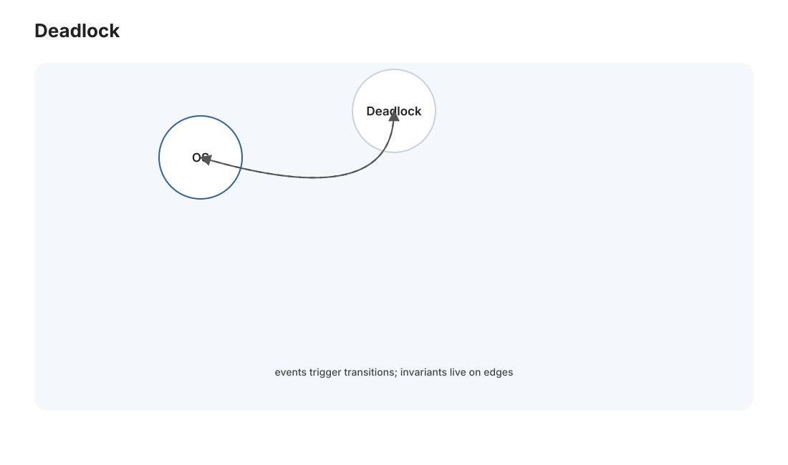

本页目录
操作系统 II · 并发与同步
对标：MIT 6.S081 / OSTEP 并发篇 ｜ 前置：os-01（线程共享地址空间）、csapp-02（缓存一致性伏笔） OSTEP 三大主题的第二个——并发。这是操作系统（以及一切多线程程序）最容易出微妙 bug 的地方：多个线程共享内存、交错执行，结果依赖于你无法控制的调度顺序。本页建立完整的同步工具箱（锁、条件变量、信号量）和它们要对付的敌人（竞态、死锁），并说清"为什么并发这么反直觉"。
学习层：同一个 counter，哪一个交错才算“正确”？
具体谜题：两个加一为什么可能只加了一次？
共享变量初值为 5。线程 A 和 B 各执行一次 counter++；硬件把它暴露成读、加一、写回三个阶段。对于 A-read, B-read, A-write, B-write，最终值是 6 还是 7？换成互不重叠的临界区又会怎样？
最小心智模型：事件、临界区与等待条件
把共享状态更新拆成事件序列，并保留每个线程的程序顺序。互斥锁把临界区串成一个全序；条件变量不是“事件记忆”，而是让线程释放锁、睡眠、被唤醒后重新检查谓词；信号量则把可用资源数量作为状态的一部分。
形式机制与不变量
若两个线程都读到旧值 \(v\)，两次写回都可能是 \(v+1\)，这违反了“每次成功调用都贡献一个增量”的线性化要求。临界区的安全不变量是任意时刻持有者至多一个；条件等待必须写成 while (!predicate) wait(cv, mutex)；死锁则要求互斥、持有并等待、不可抢占、循环等待四条件同时成立。
反例与失效边界
锁住写入却不锁读取仍可能得到数据竞态；用 if 代替 while 会在虚假唤醒或其他消费者先取走资源后继续执行错误路径；两把锁即使每次单独都正确，反序获取仍可形成等待环。原子操作解决单个线性化点，不自动解决复合不变量或内存可见性。
迁移任务：把交错证据带进 xv6
在 P01-B 中先为每个共享链表写出“由哪把锁保护”的表格，再故意交换两把锁的获取顺序，画等待图并提出全局顺序。L10 无锁栈实验仍是实际实现与 ABA 验收入口；本页的交互只训练你在代码前先枚举安全性与活性边界。
交互实验：逐步重放共享计数器的交错
无 JavaScript 时的静态读法：保持 A 的 read<write、B 的 read<write，共有 6 种交错，其中 4 种会丢失更新。A-read,B-read,A-write,B-write 的写回为 6；A-read,A-write,B-read,B-write 的结果为 7。开启 mutex 后，所有 6 种调度都等价于两个临界区的某个串行顺序，最终值固定为 7。条件变量的另一个账本是：唤醒只表示“可能有资源”，所以必须再次检查谓词。
| 交错 | 无锁结果 | mutex 结果 | 诊断 |
|---|---|---|---|
| A读 B读 A写 B写 | 6 | 7 | 丢失更新 |
| A读 A写 B读 B写 | 7 | 7 | 串行等价 |
| B读 A读 B写 A写 | 6 | 7 | 丢失更新 |
1. 竞态条件：并发 bug 的本质

看似人畜无害的 counter++，在两个线程下就会出错。因为 counter++ 不是一条指令，是读—改—写三步：
线程A: 读 counter(=5) 线程B: 读 counter(=5)
线程A: 加1 → 6 线程B: 加1 → 6
线程A: 写回 6 线程B: 写回 6 ← 丢了一次加法！
结果依赖于两个线程指令的交错顺序——这叫竞态条件（race condition）。可怕之处：① 它是间歇性的（大多数交错碰巧正确，偶尔出错）；② 依赖时序，加了打印/调试器就不复现（海森堡 bug）。"共享可变状态 + 并发访问 = 竞态"——这个等式是并发编程的原罪。
临界区（critical section）：访问共享资源的那段代码，必须保证互斥——同一时刻只有一个线程在里面。整个同步理论就是围绕"如何正确高效地实现互斥"。
2. 锁：互斥的基本工具
互斥锁（mutex）：进临界区前 lock()、出来 unlock()，保证互斥。但锁本身怎么实现？——不能用普通读写（那又是竞态），必须靠硬件原子指令：
- test-and-set / compare-and-swap（CAS）：一条不可打断的指令完成"读旧值 + 判断 + 写新值"。这是并发的物理地基——没有硬件原子性，软件层无法凭空造出互斥。
- 自旋锁 vs 阻塞锁：拿不到锁时，是忙等（自旋）还是让出 CPU 睡眠？自旋适合锁持有极短（等待 < 切换成本）；阻塞适合长临界区。真实锁常是混合（先自旋几下再睡）。
锁的性能陷阱：
- 粒度：粗粒度锁（一把大锁保护所有）简单但并发度低；细粒度锁（每个数据一把）并发高但易死锁、开销大。
- 争用（contention）：多线程抢同一把锁 → 排队 + 缓存行乒乓（🔗 csapp-02 伪共享）→ 加了线程反而更慢。"并发不等于并行加速"——锁争用能把多核优势吃光。
3. 条件变量与信号量：等待与协调

光有互斥不够——线程还需要等待某个条件（队列非空、缓冲区有位置）。
- 条件变量（condition variable）：
wait()让线程睡下并释放锁（关键！否则死锁），signal()唤醒。经典范式生产者—消费者：消费者在队列空时wait，生产者放入后signal。必用while而非if检查条件（防"虚假唤醒"和"唤醒后条件又被改"）——这是并发代码的一条铁律。 - 信号量（semaphore）：带计数的同步原语，
P（减，可能阻塞）/V（加，可能唤醒）。能同时表达互斥（初值 1）和资源计数（初值 N）。Dijkstra 的经典抽象。
这就是 [实验思路]：生产者—消费者、读者—写者是两个必手写的经典练习，把条件变量的"等待—通知"模式刻进肌肉。
4. 死锁：并发的四个必要条件

细粒度锁一多，就会遇到死锁——线程 A 持锁 1 等锁 2，线程 B 持锁 2 等锁 1，互相永久等待。Coffman 四条件（同时满足才死锁）：
- 互斥（资源不可共享）
- 持有并等待（拿着一个还要另一个）
- 不可抢占（不能强夺）
- 循环等待（等待环）
破坏任一条件即防死锁，最实用的是破坏第 4 条——给所有锁定全局顺序，永远按序获取（Medusa 若有多锁场景，"锁排序"是最省心的纪律）。此外有死锁检测（画等待图找环）与避免（银行家算法，理论多于实用）。"按固定顺序加锁"这一条工程纪律，胜过一切死锁检测算法。
5. 内存模型：最深的坑
现代 CPU 和编译器会重排内存操作（为了性能）——一个线程的写，另一个线程看到的顺序可能不同（🔗 csapp-02 缓存、par-01 缓存一致性）。所以"无锁编程"要用内存屏障 / 原子操作的内存序（memory ordering）精确控制可见性。这是并发的深水区——99% 的情况请老实用锁或高层并发结构；只有性能极致要求时才碰无锁（那是 [实验 L10] 的领域）。这也是 Rust（rust-02）把内存序放进类型系统、"无畏并发"的价值所在。
5'. 练习与要点
例 1（复现竞态） 两个线程各把一个共享计数器加 100 万次、不加锁，跑几次看最终值 < 200 万且每次不同——亲眼见到"丢失更新"，比任何解释都深刻。加锁后修复。
例 2（死锁最小例） 两把锁 + 两线程反序获取，必死锁；改成同序获取，立即修复——"锁排序"的威力一次实验说清。
例 3（while vs if） 生产者—消费者用 if 检查条件，构造一个多消费者场景让它出错（唤醒后条件被别人抢走）——理解为什么条件变量必须配 while。这个坑真实且高频。\(\blacksquare\)
📋 大 Project P01（第二阶段）· xv6 锁与并发
P01-B · 锁粒度与并发性能（承接 P01-A）：
- 学习目标：从“一把大锁能正确”推进到“多把细粒度锁仍正确且更快”；把 os-02 的竞态、死锁、锁争用落实到内核代码。
- 教师提供：锁争用计数器补丁说明、
kalloctest/bcachetest压测脚本、一个故意反序加锁的死锁小补丁供分析。- 学生任务：① 把
kalloc改成每 CPU freelist，空时从其他 CPU steal；② 把 buffer cache 改成哈希桶 + 每桶锁，减少全局锁争用；③ 写等待图或日志分析报告，定位并修复人为死锁。- 设计约束：任何共享链表操作必须说明保护它的锁；跨桶移动 buffer 时必须给出锁顺序；不得用“关中断包住所有代码”逃避并发设计。
- 验收测试：
usertests全过；kalloctest/bcachetest中锁争用次数显著低于基线；死锁补丁能稳定复现，修复后压测 60 秒无卡死。- 评分重点：正确性 35%，锁粒度设计 25%，性能证据 20%，死锁分析报告 20%。
- 延伸挑战：比较自旋等待次数、上下文切换次数与吞吐，解释“锁更细”什么时候反而更慢。
下一页：操作系统 III——文件系统与崩溃一致性：数据怎么在磁盘上组织，断电了怎么保证不损坏。